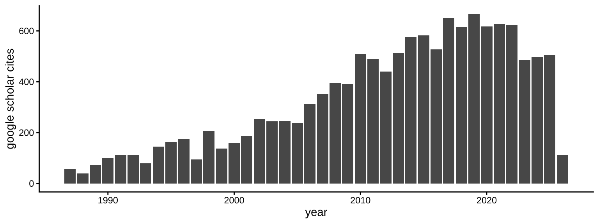

Sandiford, D., Sandiford, M., Moresi, L.N., Ting, Y., Seismic magnitude potential of flat slabs Geology, submitted January, 2020
Schofield, R., Utembe, S., Gionfriddo, C., Tate, M., Krabbenhoft, D., Adeloju, M., Dundek, M., Keywood, M., Dargaville, R., Sandiford, M., Atmospheric mercury in the La Trobe Valley, Australia: case study June 2013, submitted to Elementa, 6th November, 2019.
Sandiford, D., Moresi, L.N. Sandiford, M., Farrington, R., Ting, Y., The fingerprints of flexure in slab seismicity. Tectonics, submitted 22nd September, 2019, doi: 10.31223/osf.io/b7rj9,
Attanayake, J., King, T., Quigley, M., Gibson, G., Clark, D., Jones, A., Brennand, S., Sandiford, M.,Rupture Characteristics and the Structural Control of the 2016 Mwp 6.1 Intraplate Earthquake in the Petermann Ranges, Australia, Bulletin of the Seismological Society of America, submitted June, 2019
Sandiford, M., Lawrie, K., Brodie, R.S., 2020, Hydrogeological implications of active tectonics in the Great Artesian Basin, Australia, Hydrogeological Journal, 28, 57–73 https://doi.org/10.1007/s10040-019-02046-4, # 3
Beardsmore, G., Egan, S., Sandiford, M., 2020, A Fourier Spectral Method to Measure the Thermal Diffusivity of Soil, Geotechnical Testing Journal, 43, http://dx.doi.org/10.1520/GTJ20180300,
Skov, D.S., Egholm, D.L., Jansen, J.D., Sandiford, M., Knudsen, M.F., 2019, Detecting landscape transience with in situ cosmogenic 14C and 10Be, Quaternary Geochronology, http://dx.doi.org/10.1016/j.quageo.2019.101008,
Li, G., Sandiford, M., Fang, A., Kohn, B., Sandiford, D., Fu, B., Zhang; T., Cao, Y., Chen, F., 2019, Multi-stage exhumation history of the West Kunlun orogen and the amalgamation of the Tibetan Plateau, Earth and Planetary Science Letters, 528, http://dx.doi.org/10.1016/j.epsl.2019.115833,
Sandiford, D., Moresi, L.N., Sandiford, M., Ting, Y., 2019, Geometric controls on flat slab seismicity, Earth and Planetary Science Letters, 527, http://dx.doi.org/10.1016/j.epsl.2019.115787, # 1
Attanayake, J., Sandiford, D., Schleicher, L.S., Jones, A., Gibson, G., Sandiford, M., 2019, Interacting Intraplate Fault Systems in Australia: The 2012 Thorpdale Seismic Sequence, Journal of Geophysical Research, 124, 4673-4693, http://dx.doi.org/10.1029/2018JB016945, # 2
Rosenbaum, G., Sandiford, M., Caulfield, J., Garrison, J.M., 2018, A trapdoor mechanism for slab tearing and melt generation in the northern Andes, Geology, 47, 23-26, http://dx.doi.org/10.1130/G45429.1, # 1
Li, G., Kohn, B., Sandiford, M., Ma, Z., Xu, Z., 2018, Post-collisional exhumation of the Indus-Yarlung suture zone and Northern Tethyan Himalaya, Saga, SW Tibet, Gondwana Research, 64, 1-10, http://dx.doi.org/10.1016/j.gr.2018.06.006, # 10
Beardsmore, G., Sandiford, M., Gordon, K., McLean, M., Egan, S., McLaren, S.N., 2017, Heat flow and inferred ground surface temperature history at Tynong North, southeastern Australia, Australian Journal of Earth Science, 64, 753-767, http://dx.doi.org/10.1080/08120099.2017.1362663,
Morell, M., Sandiford, M., Kohn, B., Codilean, A., Folup, R., Ahmad, T., 2017, Current strain accumulation in the hinterland of the northwest Himalaya, Tectonophysics, 721, 70-89, http://dx.doi.org/10.1016/j.tecto.2017.09.007, # 9
Li, G., Kohn, B., Sandiford, M., Xu, Z., 2017, India-Asia convergence: Insights from burial and exhumation of the Xigaze forearc basin, south Tibet, Journal of Geophysical Research: Solid Earth, 122, http://dx.doi.org/10.1002/2017JB014080, # 9
Hoffman, N., Hardman-Mountford, N., Jenkins, C., Rayner, P.J., Gibson, G., Sandiford, M., 2017, GipNet - Baseline environmental data gathering and measurement technology validation for nearshore marine bon Storage, Energy Proceedia, 114, 3729 - 3753, http://dx.doi.org/10.1016/j.egypro.2017.03.1503.
Li, G., Kohn, B., Sandiford, M., Xu ,Z., Tian, Y., Seiler, C., 2016, Synorogenic morphotectonic evolution of the Gangdese batholith, South Tibet: Insights from low-temperature rmochronology, Geochemistry, Geophysics, Geosystems (G-cubed), A17, 101-112, http://dx.doi.org/ 10.1002/2015GC006047, # 22
Li, G., Kohn, B., Sandiford, M., Xu ,Z., Seiler, C., Tian, Y., 2016, Synorogenic morphotectonic evolution of the Gangdese batholith, South Tibet: Insights from low-temperature Thermochronology, accepted, Geochemistry, Geophysics, Geosystems, 17, 101-112.
Rajendran. C.P., Sanwal, J., Morell, K.D., Sandiford, M., Kotlia, B.S., Hellstrom, J., Rajendran, K., 2016, Stalagmite growth anomalies from central Himalaya as potential earthquake recorders, Journal of Seismology, 20, 579-594. # 11
McConnell, D., Forcey, T., Sandiford, M., 2015, Estimating the value of electricity storage in an energy-only wholesale market, Applied Energy, 159, 422-432 http://dx.doi.org/10.1016/j.apenergy.2015.09.006")` # 58
Coblentz, D., van Wijk, J., Richardson, R.M., Sandiford, M., 2015, The Upper Mantle Geoid: Implications for Continental Structure and the Intraplate Stress Field. The Interdisciplinary Earth: A volume in honor of Don L. Anderson, GSA Special Paper 514, ed. G.R. Foulger, M. Lustrino and S. King. http://dx.doi.org/10.1130/2015.2514(13)
Sandiford, M., Forcey, T., Pears, A., McConnell, D., 2015, Five years of declining annual consumption of grid-supplied electricity in eastern Australia: causes and consequences, The Electricity Journal, 28, 96-117, http://dx.doi.org/10.1016/j.tej.2015.07.007 # 17
Li, G., Kohn, B., Sandiford, M., Xu, Z., We, L., 2015, Constraining the age of Liuqu Conglomerate, southern Tibet: Implications for evolution of the India-Asia collision zone. Earth and Planetary Science Letters, 426, 259-266, http://dx.doi.org/10.1016/j.epsl.2015.06.010 # 29
Li, G., Tian, Y., Kohn, B.P., Sandiford, M., Xu, Z.,Ca, Z., 2015, Cenozoic low temperature cooling history of the Northern Tethyan Himalaya in Zedang, SE Tibet and its implications, Tectonophysics, http://dx.doi.org/10.1016/j.tecto.2014.12.014 # 23
Li., G., Sandiford, M., Boger, S., Liu, X.., Wei, L., 2015,Provenance of the Upper-Cretaceous to Lower Tertiary sedimentary relicts in the Renbu mélange zone, within the Indus-Yarlung suture zone, Journal of Geology, 123, 39–54, http://dx.doi.org/10.1086/680207 # 10
Morell, K.D., Sandiford, M., Rajendran, C.P., Rajendran, K., Fink, D., Alimanovic, A., Sanwal, J., 2015, Geomorphology reveals active decollement geometry in the central Himalayan seismic gap, Lithosphere, 7, 247-256, http://dx.doi.org/10.1130/L407.1 # 26
Ely, K.S., Sandiford, M., Phillips, D., Boger, S.D., 2014, Detrital zircon U-Pb and 40Ar/39Ar hornblende ages from the Aileu Complex, Timor-Leste: provenance and metamorphic cooling history, Journal of the Geological Society of London, http://dx.doi.org/ 10.1144/jgs2012-065 # 13
Holford, S., Tuitt, A., Hillis, R., Green, P., Stoker, M., Duddy, I., Sandiford, M., Tassone, D., 2014, Cenozoic deformation in the Otway Basin, southern Australian margin: implications for the origin and nature of post-breakup compression at rifted margins, Basin Research, 26, 10–37, http://dx.doi.org/ 10.1111/bre.12035 # 40
Li, G., Sandiford, M., Liu, X., Xu, Z., We, L., Li. H., 2014, Provenance of the Late Triassic sediments in Central Lhasa terrane, Tibet, and its implication, Gondwana Research, http://dx.doi.org/10.1016/j.gr.2013.06.019 # 43
Rawling, T.J., Sandiford, M., Beardsmore, G.R., Quenette, S., Goyen, S.H., Harrison, B., Thermal insulation and geothermal targeting, with specific reference to coal-bearing basins, Australian Journal of Earth Sciences, 60, 817-830, http://dx.doi.org/10.1080/08120099.2013.864999 # 7
Rajendran, C.P., Rajendran, K., Sanwal, J., Sandiford, M., 2013, Archeological and historical database on the medieval earthquakes of the central Himalaya: Ambiguities and Inferences, Seismological Research Letters, 84, 1098-1108, http://dx.doi.org/ 10.1785/0220130077 # 36
Egholm, D., Knusden, M.F., Sandiford, M., 2013, Lifespan of mountain ranges scaled by feedbacks between landsliding and erosion by rivers, Nature, 498, 475–478, http://dx.doi.org/10:1038/nature12218 # 89
Sanwal, J., Kotlia, B.S., Rajendran, C.P., Ahmad, S., Rajendran, K., and Sandiford, M., 2013, Climate variability in Central Indian Himalaya during the last ~1,800 years: Evidence from high resolution speleothem record, Quaternary International, 304, 183–192, http://dx.doi.org//10.1016/j.quaint.2013.03.029 # 66
McConnell, D., Hearps, P., Eales, D., Sandiford, M., Dunn, R., Wright, M., Bateman, L., 2013, Retrospective modeling of the merit-order effect on wholesale electricity prices from distributed photovoltaic generation in the Australian National Electricity Market, Energy Policy, 58,17-27, http://dx.doi.org/10.1016/j.enpol.2013.01.052 # 94
Shin, J., Sandiford, M., 2012, Neogene uplift in the Korean peninsula linked to small-scale mantle convection at sinking slab edge. Journal of Korean Geographical Society, 47(3), 328-346
Turner, S., Caulfield, J., Turner, M., van Keken, P., Maury, R., Sandiford, M., Prouteau, G., 2012, Recent contribution of sediments and fluids to the mantle’s volatile budget, Nature geoscience, 5, 50-54, http://dx.doi.org/10.1038/ngeo1325 # 36
Long, A., Budd, A., Gurgenci,H., Hand,M., Huddlestone-Holmes, C., Leary ,P., Malin, P., Moghtaderi,B., Regenauer-Lieb,K., Sandiford, M., Webster, R., 2011, Australian geothermal research 2011, Proceedings, Thirty-Sixth Workshop on Geothermal Reservoir Engineering, Stanford University, Stanford, California, January 31 - February 2, 2011, SGP-TR-191
Clark, D., Cupper, M., Sandiford, M., Kiernan, K., 2011, Style and timing of late Quaternary faulting on the lake Edgar Fault, southwest Tasmania, Australia: implications for hazard assessment in intracratonic areas, In: \$emard, F., Michetti, A., Macalpin, J. (eds) Geological criteria for evaluating seismicity revisited: 40 years of paleoseismic investigations and the natural record of past earthquakes, Geological Society of AmericaSpecial Papers, 479, 109-131, http://dx.doi.org/10.1130/2011.2479(05) # 32
Ely, K.S., Sandiford, M., Hawke, M.L., Phillips, D., Quigley, M., dos Reis, J.E., Evolution of Ataúro Island: temporal constraints on subduction processes beneath the Wetar Zone, Banda Arc , Journal of Asian Earth sciences, http://dx.doi.org/10.1016/j.jseaes.2011.01.019 # 21
Holford, S.P., Hillis, R.R., Hand, M. and Sandiford, M., 2011, Thermal weakening localizes intraplate deformation along the southern Australian continental margin, Earth and Planetary Science Letters, 305, 217-214, http://dx.doi.org/10.1016/j.epsl.2011.02.056 # 40
Fu,B., Walker, R., Sandiford, M., 2011, The 2008 Wenchuan earthquake and active tectonics of Asia, Journal of Asian Earth Sciences, 40, 797-804 # 14
Jakica, S, Quigley, M., Sandiford, M., Clark, D., Fifield, L.K., Alimanovic, A., 2011, Geomorphic and cosmogenic nuclide constraints on escarpment evolution in an intraplate setting, Darling Escarpment, Western Australia, Earth Surface Processes and Landforms, 36, 449-459, http://dx.doi.org/10.1002/esp.2058 # 25
Turner, S., Sandiford, M., Regan, M., Hawkesworth, C., Hildreth, W., 2010, The origins of large volume, compositionally-zoned volcanic eruptions - new constraints from U-series isotopes and numerical thermal modeling for the 1912 Katmai-Novarupta eruption, Journal of Geophysical Research, 115, B12201, http://dx.doi.org/10.1029/2009JB007195 # 10
Quigley, M.C., Clark, D., Sandiford, M., 2010, Tectonic geomorphology of Australia, In: Bishop, P., Pillans, B. (eds) Australian Landscapes. Geological Society, London, Special Publications, 346, 243-265 # 99
Quigley, M., Horton, T., Hellstrom, J., Cupper, M., Sandiford, M., 2010, Holocene precipitation variability in arid Australia from speleothem and alluvial records, The Holocene, http://dx.doi.org/10.1177/0959683610369508 # 51
Sandiford, M., 2010, Complex Subduction, Nature Geoscience, 3, 518-520, http://dx.doi.org/10.1038/ngeo928 # 5
Brown, M., White, R.W., Sandiford, M., 2010, On the importance of minding one’s Ps and Ts: Metamorphic processes and quantitative petrology, Journal of Metamorphic Geology, 28, 561–567, http://dx.doi.org/10.1111/j.1525-1314.2010.00892.x ",
Sandiford, M., 2010, Why are the continents just so …?, Journal of Metamorphic Geology, 28, 569–577 http://dx.doi.org/10.1111/j.1525-1314.2010.00888.x # 9
Farrington, R., Stegman, D., Moresi, L.N., Sandiford, M., May, D., 2010, Interactions of 3D mantle flow and continental lithosphere near passive margins, Tectonophysics, 483, 20-28 http://dx.doi.org/10.1016/j.tecto.2009.10.008 # 37
Ely, K., Sandiford, M., 2010, Seismic response to slab rupture and variation in lithospheric structure beneath the Savu Sea, Indonesia, Tectonophysics, 483, 112-124, http://dx.doi.org/10.1016/j.tecto.2009.08.027 # 21
Woodhead, J., Hergt, J., Sandiford, M., Johnson, W., 2010, The big crunch: physical and chemical expressions of arc/continent collision in the western Bismarck arc, Journal of Volcanology and Geothermal Research, 190, 11-24 http://dx.doi.org/10.1016/j.jvolgeores.2009.03.003 # 30
Quigley M. C., Sandiford, M., Clark, D., 2009, Neotectonics and landscape evolution of southeastern Australia: establishing a geologic context for contemporary seismicity, In: Clark, D., (ed), Potential geologic sources of seismic hazard in the Sydney Basin. Geoscience Australia Record 2009/11, 1-6
Sandiford, M., Quigley, M., de Broekert, P., Jakica, S., 2009, Tectonic framework for the Cenozoic cratonic basins of Australia, Australian Journal of Earth Sciences, 56, S5-S18, http://dx.doi.org/10.1080/08120090902870764 # 57
Turner,S., Haines, P., Foster, D, Powell R., Sandiford, M., Offler, R.,2009, Did the Delamerian Orogeny start in the Neoproterozoic? Journal of Geology, 117, 575-583
Braun, J., Burbidge, D.R., Gesto, F.N., Sandiford, M., Gleadow, A.J.W., Kohn, B.P., Cummins, P.R., 2009, Constraints on the current rate of deformation and surface uplift of the Australian continent from a new seismic database and low-T thermochronological data. Australian Journal of Earth Sciences, 56, 99-110 http://dx.doi.org/10.1080/08120090802546977 # 53
McLaren, S., Sandiford, M., Dunlap, W.J., Scrimgeour, I., Close, D. and Edgoose, C., 2009, Distribution of Palaeozoic reworking in the Western Arunta province and northwestern Amadeus Basin from 40Ar/39Ar thermochronology: implications for the evolution of intracratonic basins, Basin Research, 21, 315-334 http://dx.doi.org/10.1111/j.1365-2117.2008.00385.x # 19
Sandiford, M., Quigley,M.C., 2009, TOPO-OZ: insights into the various modes of intraplate deformation in the Australian continent, Tectonophysics, 474, 405-416 http://dx.doi.org/10.1016/j.tecto.2009.01.028 # 54
Somerville, P., Quijada, P., Hong Kie Thio, Sandiford, M., Quigley, M., 2008, Contribution of identified active faults to near fault seismic hazard in the Flinders Ranges, Australian Earthquake Engineering Society Conference Proceedings, Paper 45, 1-9.
Egholm, D.L., Clausen, O.R., Sandiford, M., Kristensen, M.B., Korstgard, J.A., 2008, The mechanics of clay smearing along faults, Geology, 36, 787–790 http://dx.doi.org/0.1130/G24975A.1 # 70
Hillis, R.R., Sandiford, M., Reynolds, S.D. and Quigley, M.C., 2008, Present-day stresses, seismicity and Neogene-to-Recent tectonics of Australia’s ‘passive’ margins: intraplate deformation controlled by plate boundary forces. In: Johnson, H., Dore, A. G., Gatliff, R. W., Holdsworth, R., Lundin, E. and Ritchie, J. D. (eds) The Nature and Origin of Compression in Passive Margins. Geological Society, London, Special Publications, 306, 71–89 http://dx.doi.org/10.1144/SP306.3 # 141
Sandiford, M., Egholm, D.L., 2008, Enhanced intraplate seismicity along continental margins: some causes and consequences, Tectonophysics, 457, 197–208, http://dx.doi.org/10.1016/j.tecto.2008.06.004 # 41
Quigley, M.C., Yu Liangjun, Gregory, C., Corvino, A., Sandiford, M., Wilson, C.J.L., Liu Xiaohan, 2008, U-Pb SHRIMP zircon geochronology and T-t-d history of the Kampa Dome, southern Tibet, Tectonophysics, 446, 97-113 http://dx.doi.org/10.1016/j.tecto.2007.11.004 # 80
Dosseto, A., Turner, S.P., Sandiford, M., Davidson, J., 2008, Uranium-series isotope and thermal constraints on the rate and depth of silicic magma genesis, In: Dynamics of Crustal Magma Transfer, Storage and Differentiation, Annen C. and Zellmer, G.F. (eds). Geological Society of London Special Publication, 304, 169-181 # 7
Hou, B., Frakes, L.A., Sandiford, M., Worrall, L., Keeling, J., Alley, N.F., 2008, Cenozoic Eucla Basin and associated palaeovalleys, southern Australia - climatic and tectonic influences on landscape evolution, sedimentation and heavy mineral accumulation, Sedimentary Geology, 203, 112-130 http://dx.doi.org/ 10.1016/j.sedgeo.2007.11.005 # 66
Sandiford, M., 2008, Seismic moment release during slab rupture beneath the Banda Sea, Geophysical Journal International, 174, 659–671 http://dx.doi.org/ 10.1111/j.1365-246X.2008.03838.x # 32
Bowler, J.M., Sandiford, M., 2007, Dynamic Antarctic Ice: agent for Mid-Pleistocene Transition, PAGESnews, 15, 16-18 # 3
Quigley, M., Sandiford, M., Cupper, M., 2007, Distinguishing tectonic from climatic controls on range-front sedimentation, Flinders Ranges, South Australia. Basin Research, 19, 491–505 http://dx.doi.org/ 10.1111/j.1365-2117.2007.00336.x # 69
Demidjuk, Z., Turner, S., Sandiford, M., George, R., Foden, J., Etheridge, M., 2007, U-series isotope and geodynamic constraints on mantle melting processes beneath the Newer Volcanic Province in South Australia, Earth and Planetary Science Letters, 261, 517–533 http://dx.doi.org/ 10.1016/j.epsl.2007.07.006 # 102
Sandiford, M., 2007, The tilting continent: a new constraint on the dynamic topographic field from Australia, Earth and Planetary Science Letters, 261, 152-163 http://dx.doi.org/ 10.1016/j.epsl.2007.06.023 # 105
Quigley, M., Sandiford, M., Alimanovic, A., Fifield, L.K., 2007, Landscape responses to intraplate tectonism in the Flinders Ranges, South Australia: quantitative constraints from 10Be abundances, Earth and Planetary Science Letters, 261,120-133 http://dx.doi.org/10.1016/j.epsl.2007.06.020 # 43
Egholm, D.L., Sandiford, M., Clausen, O.L., Nielsen, S.B., 2007, A new strategy for discrete element numerical models Part II: Sandbox applications, Journal of Geophysical Research, 112, B05204 http://dx.doi.org/10.1029/2006JB004558 # 66
Quigley, M., Sandiford, M., Fifield, K., Alimanovic A., 2007, Bedrock erosion and relief production in the northern Flinders Ranges, Australia. Earth Surface Processes and Landforms, 32, 929-944 http://dx.doi.org/ 10.1002/esp.1459 # 66
McLaren, S., Sandiford, M., Powell, R., Neumann, N., Woodhead, J., 2006, Palaeozoic intraplate crustal anatexis in the Mount Painter province, South Australia: timing, thermal budgets and the role of crustal heat production, Journal of Petrology, 47, 2281-2302 http://dx.doi.org/10.1093/petrology/egl044 # 60
Quigley, M., Yu Liangjun, Liu Xiaohan, Wilson, C.J.L, Sandiford, M., Phillips, D., 2006, 40Ar/39Ar thermochronology of the Kampa Dome, southern Tibet: implications for the thermal evolution of North Himalayan middle crust, Tectonophysics, 421, 269-297 # 55
Nelson, E., Hillis, R., Sandiford, M., Reynolds, S., Lyon, P., Meyer, J., Mildren, S., Rogers, C., 2006, Present-day state-of-stress of southeast Australia, APPEA Journal 2006, 283-305
Grew, E.S., Yates, M.G.,Shearer, C.K., Hagerty, J.J., Sheraton, J.W., Sandiford, M., 2006, Beryllium in psammo-pelitic granulites and anatectic pegmatites of the ultrahigh-temperature Napier Complex, Enderby Land, East Antarctica: The role of sapphirine, Journal of Petrology, 47, 859-882 http://dx.doi.org/10:1093/petrology/egi098
Sandiford, M., McLaren, S., 2006, Thermo-mechanical controls on heat production distributions and the long-term evolution of the continents, “Evolution and differentiation of the continental crust” (eds, Brown, M. and Rushmer, T.), Cambridge University Press, 67-91 # 28
Quigley, M., Cupper, M., Sandiford, M., 2006, Quaternary faults of south-central Australia: palaeoseismicity, slip rates and origin, Australian Journal of Earth Sciences, 53, 285-301 # 109
Bodorkos, S., Sandiford, M., 2006, Thermal and mechanical controls on the evolution of Archean crustal deformation: examples from Western Australia, AGU Volume Archean Geodynamic and Environments, (eds, Keith Benn, Jean-Cl\$e Mareschal, Kent Condie). Geophysical Monograph Series 164, American Geophysical Union), 370 # 31
Sandiford, M., Hansen D.L., McLaren, S.N., 2006, Lower crustal rheological expression in inverted basins, in Analogue and Numerical Modelling of Crustal Scale Processes (eds Buiter, S. and Schreurs, G.). Geological Society Special Publication, 253, 271-283
Celerier, J., Sandiford, M., Hansen, D.L., Quigley, M., 2005, Modes of active intraplate deformation, Flinders Ranges, Australia, Tectonics, 24 http://dx.doi.org/10.029/2004andC001679 # 103
McLaren, S., Sandiford, M., Powell, R., 2005, Contrasting styles of Proterozoic crustal evolution: a hot-plate tectonic model for Australian terranes, Geology, 33,673-676 # 72
Wallace, M., Dickinson, J.A., Moore, D., Sandiford, M., 2005, Late Neogene strandlines of Southern Victoria: A unique record of eustasy and tectonics in southeast Australia, Australian Journal of Earth Sciences, 52, 277-295. # 68
de Broekert, P., Sandiford, M., 2005, Buried inset-valleys in the eastern Yilgarn Craton, Western Australia: Geomorphology, age and allogenic control, Journal of Geology, 113, 471-493
Sandiford, M., Coblentz, D., Schellart, W.P., 2005, Evaluating slab-plate coupling in the Indo-Australian plate, Geology, 33, 113-116 # 33
Sandiford, M., Wallace, M., Coblentz, D, 2004, Origin of the in situ stress field in south-eastern Australia, Basin Research, 16, 325-338 # 165
Sandiford, M., Van Kranendonk, M., Bodorkos, S., 2004, Conductive incubation and the origin of granite-greenstone dome and keel structure: the Eastern Pilbara Craton, Australia, Tectonics, 23, TC1009, http://dx.doi.org/ 10.1029/2002TC001452 # 68
Bodorkos, S., Sandiford, M., Minty, B.R.S., Blewett, R.S., 2004, A high-resolution, calibrated airborne radiometric dataset applied to the estimation of crustal heat production in the Archaean northern Pilbara Craton, Western Australia, Precambrian Research, 128, 57-82
Sandiford, M., Leonard, M., Coblentz, D, 2003, Geological constraints on active seismicity in southeast Australia, In “Earthquake Risk Mitigation”, (eds, Wilson, J.L, Lam, N.K., Gibson. G.), Australian Earthquake Engineering Society, 1-10
Sandiford, M., Frederiksen, S., Braun, J., 2003, The long-term thermal consequences of rifting: implications for basin reactivation, Basin Research,15, 23-43 # 19
Sandiford, M., 2003, Geomorphic constraints on the late Neogene tectonics of the Otway Range, Victoria, Australian Journal of Earth Sciences, 50, 69-80 # 78
McLaren, S., Sandiford, M., Hand, M., Neumann, N., Wyborn, L., Bastrakova, I., 2003, The hot southern continent, Heat flow and heat production in Australian Proterozoic terranes, eds Hillis, R.R. Muller, D., Evolution and dynamics of the Australian Plate, Geological Society of Australia, Special Publication, 22, 151-161 # 109
Sandiford, M., 2003, Neotectonics of southeastern Australia: linking the Quaternary faulting record with seismicity and in situ stress, eds Hillis, R.R. Muller, D., Evolution and dynamics of the Australian Plate, Geological Society of Australia, Special Publication, 22, 101-113 # 195
Sandiford, M., 2002, Late Neogene faulting record in southeastern Australia, In Victoria Undercover, (eds. Phillips, G.N., and Ely, K.S.,), 131-135
Sandiford, M., McLaren, S., 2002, Tectonic feedback and the ordering of heat producing elements within the continental lithosphere, Earth and Planetary Science Letters, 2002, 204, 133-150 # 156
Sandiford, M.,2002, Low thermal Peclet number intraplate orogeny in central Australia, Earth and Planetary Science Letters,201, 309-320. # 24
Foden, J.D., Elburg, M.A., Turner, S.P., Sandiford, M., O’Callghan, J., Mitchell, S., 2002, Granite production in the Delamerian Orogen, South Australia, Journal of the Geological society of London, 159, 557-575 # 95
McLaren, S., Dunlap, J., Sandiford, M. McDougall, I., 2002, The thermochronology of high heat-producing crust at Mount Painter, South Australia: implications for tectonic reactivation of continental interiors, Tectonics http://dx.doi.org/10.1029/2000TC001275 # 71
Alías, G., Sandiford, M., Hand, M., Worley, B., 2002, The P-T record of synchronous magmatism, metamorphism and deformation at Petrel Cove, southern Adelaide Fold Belt, Journal of Metamorphic Geology, 20, 351-36 # 23
Bodorkos, S., Sandiford, M., Oliver, N.H.S., Cawood, P.A. 2002, High-T, low-P metamorphism as the middle crustal response to a mantle-related transient thermal pulse: a numerical model and its application to the Palaeoproterozoic Halls Creek Orogen, northern Australia, Journal of Metamorphic Geology, 20, 217-237 # 45
Sandiford, M., McLaren, S., Neumann, N, 2002, Long-term thermal consequences of the redistribution of heat-producing elements associated with large-scale granitic complexes, Journal of Metamorphic Geology, 20, 87-98 # 75
Haines, P, Hand, M., Sandiford, M., 2001, Palaeozoic syn-orogenic sedimentation in central and northern Australia: a review of distribution and timing with implications for the evolution of intracontinental orogens, Australian Journal of Earth Sciences, 48, 911-928 # 162
Sandiford, M., Hand, M.,McLaren, S., 2001, Tectonic feedback, intraplate orogeny and the geochemical structure of the crust: a central Australian perspective, In Continental Reactivation and Reworking, (eds, Miller, J., Holdsworth, R., Buick, I., Hand, M.), Geological Society Special Publication No. 184, 195-218 # 77
McLaren, S., Sandiford, M., 2001, Long-term thermal consequences of tetconic activity at Mount Isa, Australia: Implications for polyphase tectonism in the Proterozoic.In Continental Reactivation and Reworking, (eds, Miller, J., Holdsworth, R., Buick, I., Hand, M.), Geological Society Special Publication No. 184, 219-236 # 22
Neumann, N, Sandiford, M., Foden, J., 2000, Regional geochemistry and continental heat flow: Implications for the origin of the South Australian heat flow anomaly. Earth and Planetary Science Letters, 183, 107-120 # 167
Fraser, G., Worley, B., Sandiford, M., 2000, High precision geothermobarometry across the High Himalayan metamorphic sequence, Langtang Valley, Nepal. Journal of metamorphic Geology,18, 665 - 682
McLaren, S., Sandiford, M., Hand, M., 2000, High radiogenic heat producing granites and metamorphism - an example from the western Mount Isa Inlier, Australia, reply to comment, Geology, 28, 672 # 130
Paul, E., Sandiford, M., Flottman, T., 2000, The structural geometry of a thick-skinned fold-thrust belt termination : the Olary Block in the Adelaide Fold Belt, South Australia. Australian Journal of Earth Sciences, 47, 281-290 # 24
Arnold, J., Powell, R., Sandiford, M., 2000, Amphibolites with staurolite and other aluminous minerals: calculated mineral equilibria in NCFMASH, Journal of metamorphic Geology, 18, 23-40 # 24
McLaren, S., Sandiford, M., Hand, M., 1999, High radiogenic heat producing granites and metamorphism - an example from the western Mount Isa Inlier, Australia, Geology, 27, 679-682 # 130
Hand, M., Sandiford, M., Wyborn, L., 1999, Some thermal consequences of high heat production in the Australian Proterozoic. AGSO research Newsletter, 30, 20-23 # 13
McLaren, S., Neumman, N., Sandiford, M., Wyborn, L., 1999, Post-intrusion heating associated with high-heat-producing Proterozoic granites - Implications for mineralisation? AGSO research Newsletter, 30, 23-26 # 9
Tokarev, V., Sandiford, M., Gostin, V., 1999, Landscape evolution in the Mount Lofty Ranges: implications for regolith development. In Regolith’98 : new approaches to an old continent, (eds) Taylor, G., Pain C., 131-139. # 31
Hand, M., Sandiford, M., 1999, Intraplate deformation in central Australia, the link between subsidence and fault ractivation, Tectonophysics, 305, 121-140 # 319
Sandiford, M., 1999, Mechanics of basin inversion, Tectonophysics, 305, 109-120 # 78
Paul, E., Flottmann, T., Sandiford, M., 1999, Structural geometry and controls on basement-involved deformation in the northern Flinders Ranges, Adelaide Fold Belt, South Australia, Australian Journal of Earth Sciences, 46, 343-354 # 68
Foden, J., Sandiford, M., Dougherty-Page, J., Willliams, I., 1999, Geochemistry and geochronology of the Rathjen Gneiss: implications for the early tectonic evolution of the Delamerian Orogen. Australian Journal of Earth Science, 46, 377-389 # 89
Sandiford, M., Paul, E., Flottmann, T., 1998, Sedimentary thickness variations and deformation intensity during basin inversion in the Flinders Ranges, South Australia, Journal of Structural Geology, 20, 1721-1731 # 28
Sandiford, M., Hand, M., McLaren, S., 1998, High geothermal gradient metamorphism during thermal subsidence, Earth and Planetary Science Letters, 163, 149-165 # 117
Sandiford, M., Hand, M., 1998, Controls on the locus of Phanerozoic intraplate deformation in central Australia, Earth and Planetary Science Letters, 162, 97-110 # 156
Coblentz, D., Zhou, S., Hillis, R., Richardson, R., Sandiford, M., 1988, Topography, plate-boundary forces and the Indo-Australian intraplate stress field, Journal of Geophysical Research, 103, 919-931 # 189
Sandiford, M., Hand, M., 1998, Australian Proterozoic high-temperature metamorphism in the conductive limit, In What Controls Metamorphism, (ed) Treloar, P., and O’Brien, P, Geological Society of London Special Publication, 138, 103-11 # 52
Hillis, R., Sandiford, M., Coblentz, D., Zhou, S., 1997, Modelling the Contemporary stress field and its implications for Hydrocarbon exploration, Exploration Geophysics, 28, 88-93 # 12
Turner, S., Kelly, S.P, Vandenberg, A.H., Foden, J., Sandiford, M., Flotmmann, T., 1996, Source of Delamerian fold belt flysch linkes to convective removal of the lithospheric mantle and rapid exhumation of the Delamerian-Ross fold belt, Geology, 24, 941-944 # 103
Zhou, S., Hillis, R , Sandiford, M., 1996, A supplement to ‘A study of inclined wellbores with regard to both mechanical stability and fracture intersection and its application to the Australian North West Shelf’, Journal of Applied Geophysics, 36, 145-147.
Zhou, S., Hillis, R , Sandiford, M., 1996, On the mechanical stability of inclined boreholes, SPE drilling, 11, 67-73.
Turner, S., Sandiford, M., Flottman, T., Foden, J., 1995, Rb/Sr dating of differentiated cleavage from the Adelaidean metasediments at Hallet Cove, southern Adelaide Fold Belt: Reply to disucssion by W.V. Preiss, Journal of Structural Geology, 17, 1801-1803.
Arnold, J., Sandiford, M., Wetherley, S., 1995, Metamorphic events in the Eastern Arunta Inlier, Part 1. Metamorphic petrology, Precambrian Research,71, 183-205. # 20
Coblentz, D., Sandiford, M., Richardson, R, Zhou, S., Hillis, R., 1995, The origins of the Australian stress field, Earth and Planetary Science Letters, 133, 299-309. # 171
Sandiford, M., Coblentz, D., Richardson, R.M., 1995, Ridge torques and continental collision in the Indian-Australian plate, Geology, 23, 653-656. # 45
Stuwe, K., Sandiford, M., 1995, Description of Metamorphic Pressure- Temperature-Time paths in the Low-P High-T Environment, Physics of the Earth and Planetary Interiors, 88, 211-221. # 2
Stuwe, K., Sandiford, M., 1995, Mantle lithospheric deformation and crustal metamorphism, with some speculations on the thermal and mechanical significance of the Tauern event, Eastern Alps, Tectonophysics, 214, 115-132. # 17
Sandiford, M., Fraser, G., Arnold, J., Foden, J., Farrow, T., 1995, Some causes and consequences of High-T, Low-P metamorphism, Mount Lofty Ranges, Australian Journal of Earth Sciences, 42, 233-240.
Mildren, S., Sandiford, M., 1995, A heat refraction mechanism for Low-P metamorphism in the northern Flinders Ranges, South Australia, Australian Journal of Earth Sciences, 42, 241-247. # 32
Cartwright, I., Vry, J., Sandiford, M., 1995, Changes in stable isotope ratios of metapelites and marbles during regional metamorphism, Mount Lofty Ranges, South Australia: Implications for crustal scale fluid flow, Contributions to Mineralogy and Petrology, 120, 292-310. # 39
Zhou, S., Hillis, R., Sandiford, M., 1994, A study of inclined wellbores with regard to both mechanical stability and fracture intersection and its application to the Australian North West Shelf, Journal of Applied Geophysics, 32, 293-304.# 27
Coblentz, D., Sandiford, M., 1994, Tectonic stresses in the African plate: Constraints on the ambient stress state, Geology, 22, 831-834. # 106
Coblentz, D., Richardson, R.M., Sandiford, M., 1994, On the gravitational potential of the Earth’s lithosphere, Tectonics, 13, 929-945. # 108
Ehlers, K., Stuwe, K., Powell, R., Sandiford, M., Frank, W., 1994, Thermometrically inferred cooling rates from the Plattengneis, Koralm Region - Eastern Alps, Earth and Planetary Science Letters, 125, 307-321.# 22
Sandiford, M., Coblentz, D., 1994, Plate-scale potential energy distributions and the fragmentation of ageing plates, Earth and Planetary Science Letters, 126, 143-159. # 28
Stuwe, K., Sandiford, M., 1994, A possible contribution of deviatoric stresses to metamorphic PT paths; an example appropriate to low-P, high-T metamorphism, Journal of Metamorphic Geology, 12, 445-454. # 49
Turner, S., Sandiford, M., Flottman, T., Foden, J., 1994, Rb-Sr dating of differentiated cleavage: an example from the Adelaidean metasediments at Hallet Cove, with implications for the tectonic evolution of the southern Adelaide Fold Belt, Journal of Structural Geology, 16, 1233-1242. # 25
Stuwe, K., Sandiford, M., 1994, Some remarks on the geomorphological evolution of the eastern Alps, constraints on Cretaceous nappe tectonics, Mitteilungen der Osterreichischen geologischen Gesellschaft, 86, 165-176. # 5
Stuwe, K., Sandiford, M., 1993, A preliminary model for the 500 Ma event in the East Antarctic Shield, In: Gondwana Eight (eds. Findlay, Unrug and Veevers), Balkema, 125, # 33
Turner, S., Foden, J., Sandiford, M., Bruce, D., 1993, Sm-Nd isotopic evidence for the provenance of sediments from the Adelaide Fold Belt and southeastern Australia with implications for crustal growth models, Geochemica Cosmochemica Acta, 57, 1837-1856. # 111
Stuwe, K., Sandiford, M., Powell, R., 1993, Episodic metamorphism and deformation events in Low-P, High-T terrains, Geology, 21, 829-832. # 48
Scrimgeour, I., Sandiford, M., 1993, Early Proterozoic metamorphism at the Granites, northern Territory, implications for fluid production in high T - low P terrains, Economic Geology, 88, 1099-1113. # 20
Dymoke, P., Sandiford, M., 1992, Phase relations in Buchan facies series pelitic assemblages: calculations with application to andalusite-staurolite assemblages in the Mount Lofty Ranges, South Australia, Contributions to Mineralogy and Petrology, 110, 121-132. # 64
Jenkins, R.F.J., Sandiford, M., 1992, Observations on the tectonic evolution of the southern Adelaide fold Belt, Tectonophysics, 214, 27-36. # 69
Sandiford, M., Foden, J., Zhou, S., Turner, S., 1992, Granite genesis and the mechanics of convergent orogenic belts with application to the southern Adelaide Fold Belt. Proceedings of the Royal Society of Edinburgh (Hutton Symposium Volume) 83, 83-93. # 64
Zhou, S., Sandiford, M., 1992, On the stability of isostatically compensated mountain belts. Journal of Geophysical Research, 97, 14207-14221. # 60
Sandiford, M., Foden, J., Zhou, S., Turner, S., 1992, Granite genesis and the mechanics on convergent orogenic belts with application to the southern Adelaide Fold Belt. Geological Society of America, Special Paper, 273, 83-93.# 64
Turner, S., Sandiford, M., Foden, J., 1992, Some geodynamic and compositional constraints on “post-orogenic” magmatism, Geology, 20, 931-934. # 270
Ding, P., James, P., Sandiford, M., 1992, Late Proterozoic intracratonic deformation along the northern margin of the Amadeus Basin. Australian Journal of Earth Sciences, 39, 495-500.
Sandiford, M., Santosh, M., 1991, A granulite facies kalsilite-leucite-hibonite association from Punalur, southern India. Mineralogy and Petrology, 43, 225-236.# 25
Sandiford, M., Dymoke, P., 1991, Some remarks on the stability of blueschists and related high P - low T assemblages in continental orogens, Earth and Planetary Science Letters, 102, 14-23. # 18
Sandiford, M., Powell, R., 1991, Some remarks on high temperature-low pressure metamorphism in convergent orogens, Journal of Metamorphic geology, 9, 333-340. # 185
Santosh, M., Sandiford, M., Reed, S.J.B., 1991, Zoned hibonites from Punalur, South India, Mineralogical Magazine, 55, 159-162. # 10
Sandiford, M., Martin, N., Zhou, S., Fraser, G., 1991, Mechanical consequences of granite emplacement during high-T, low-P metamorphism and the origin of “anticlockwise” PT paths, Earth and Planetary Science Letters, 107, 164-172. # 78
Sandiford, M., Oliver, R.L., Mills, K.J., Allen, R.V., 1990, A cordierite-staurolite- muscovite association east of Springton, Mount Lofty Ranges; implications for the metamorphic evolution of the Kanmantoo Group. In “Proterozoic and early Palaeozoic geology of the Adelaide Geosyncline”, Geological Society of Australia, Special publication (Daily Volume), 16, 483-495.# 24
Sandiford, M., Powell, R., 1990, Some thermal and isostatic consequences of the vertical strain geometry in convergent orogens, Earth and Planetary Science Letters, 98, 154 - 165. # 99
Arnold, J., Sandiford, M., 1990, Petrogenesis of cordierite-orthoamphibole assemblages in the Springton region, South Australia, Contributions to Mineralogy and Petrology, 106, 100-109. # 33
Sandiford, M., 1989, Horizontal structures in granulite terrains : a record of mountain building or mountain collapse? Geology, 17, 449 - 452. # 140
Sandiford, M., 1989, Secular trends in the thermal evolution of metamorphic belts, Earth and Planetary Science Letters, 95, 85-96. # 39
Powell, R., Sandiford, M., 1988, Sapphirine and spinel phase relationships in the system FeO-MgO-SiO2-TiO2-Al2O3-O2 in the presence of quartz and hypersthene. Contributions to Mineralogy and Petrology, 98, 64-71.# 60
Waldron, W., Sandiford, M., 1988, Deformation volume and cleavage development in metasediments from the Ballarat Slate Belt, Journal of Structural Geology, 10, 53-62.# 45
Sandiford, M., Powell, R., Martin, S.F., Perera, L.R.K., 1988. Thermal and baric evolution of garnet granulites, Sri Lanka. Journal of Metamorphic Geology, 6, 351-364.# 70
Sandiford, M., Powell, R., 1988, Pyroxene exsolution in granulites from Fyfe Hills, Enderby Land, Antarctica; evidence for 1000°C metamorphic temperatures in Archaean continental crust; reply. American Mineralogist, 73, 434-438.
Sandiford, M., Martin, S.F., Lowe, E., 1988, Shear zone deformation in the Yackandandah granite, NE Victoria, Australian Journal of Earth Science, 35, 223-230. # 15
Fitzgerald, P.F., Sandiford, M., Barret, P.J., Gleadow, A.J.W., 1987, Asymmetric extension associated with uplift and subsidence in the Transantarctic Mountains and Ross Embayment, Earth and Planetary Science Letters, 81, 67-78. # 245
Sandiford, M., Neall, F., Powell, R., 1987, Metamorphic evolution of granulites from Labwor Hills, Uganda, Contributions to Mineralogy and Petrology, 95, 217-225. # 94
Baker, J., Powell, R., Sandiford, M., Muhling, J., 1987, Corona textures between kyanite, garnet and gedrite gneisses from Errabiddy, Western Australia. Journal of Metamorphic Geology, 5, 557-570. # 30
Sandiford, M., Wilson, C., 1986, The origin of Archaean gneisses in the Fyfe Hills region, Enderby Land, Antarctica; field occurrence, petrography and geochemistry, Precambrian Research, 31, 37-68. # 16
Sandiford, M., Powell, R., 1986, Pyroxene exsolution in granulites from Fyfe Hills, Enderby Land, Antarctica: evidence for 1000°C metamorphic temperatures in Archaean continental crust, American Mineralogist, 71, 946-954. # 127
Sandiford, M., Powell, R., 1986, Deep crustal metamorphism during continental extension, ancient and modern examples. Earth and Planetary Science Letters, 79, 151-158. # 396
Sandiford, M., Keays, R., 1986, Structural and tectonic constraints on the origin of gold in the Ballarat Slate Belt, in Kleppie, J.D. (Ed.) “Turbidite hosted gold deposits”, Geological Society of Canada, Special paper, 32,15-24. # 117
Sandiford, M., 1985, The metamorphic evolution of granulites from Fyfe Hills, implications for Archaean crustal thickness in Enderby Land, Antarctica. Journal of Metamorphic Geology, 3, 155-178. # 104
Sandiford, M., 1985, The structural evolution of the Lanterman metamorphic complex, northern Victoria Land, New Zealand Journal of Geology and Geophysics, 28, 443-458.
# 12
Sandiford, M., 1985, The origin of retrograde shear zones in the Napier Complex, implications for the tectonic evolution of Enderby Land, Antarctica, Journal of Structural Geology, 7, 477-488. # 56
Grew, E.S., Sandiford, M., 1985, Staurolite in a garnet-hornblende-biotite schist from the Lanterman Range, northern Victoria Land, Antarctica, Neues Jarbuch Mineralogie, Heft, 9, 396-410. # 14
Sandiford, M., Wilson, C.J.L., 1984, The structural evolution of the Fyfe Hills - Khmara Bay region, Enderby Land, East Antarctica, Australian Journal of Earth Sciences, 31, 403- 426. # 97
Grew, E.S., Sandiford, M., 1984, A staurolite-talc assemblage in tourmaline-phlogopite- chlorite schist from Northern Victoria Land, Antarctica and its petrogenetic significance. Contributions to Mineralogy and Petrology, 87, 337-350. # 51
Grew, E.S., Manton, W.I., Sandiford, M., 1983, Geochronologic studies in East Antarctica: age of pegmatites in Casey Bay, Enderby Land. Antarctic Journal of the United States, 17, 1-2. # 24
Grew, E.S., Sandiford, M., 1983, Field studies of the Wilson and Rennick Groups, Rennick Glacier area, northern Victoria Land. Antarctic Journal of the United States, 17, 7-8. # 8
Sandiford, M., Wilson, C.J.L. 1983, The Geology of the Fyfe Hills- Khmara Bay Region, Enderby Land, in Oliver, R.L., James, P.R. and Jago, J.B. Antarctic earth sciences, Australian Academy of Sciences, Canberra, 16-19 # 23
Google Scholar - 2020-02-04
Total citations - 9620
Hirsch-index - 60
i10-index - 150
